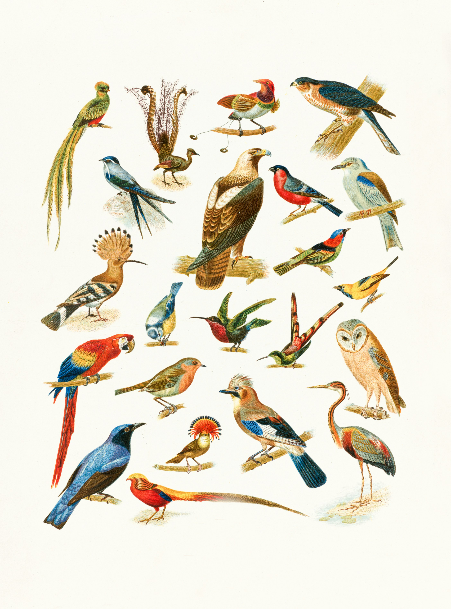
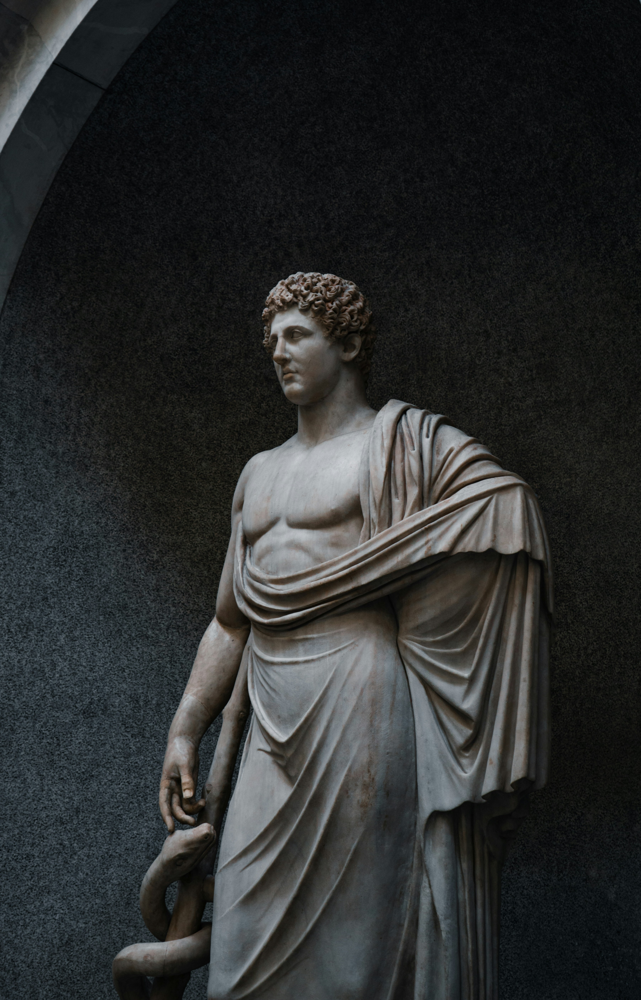
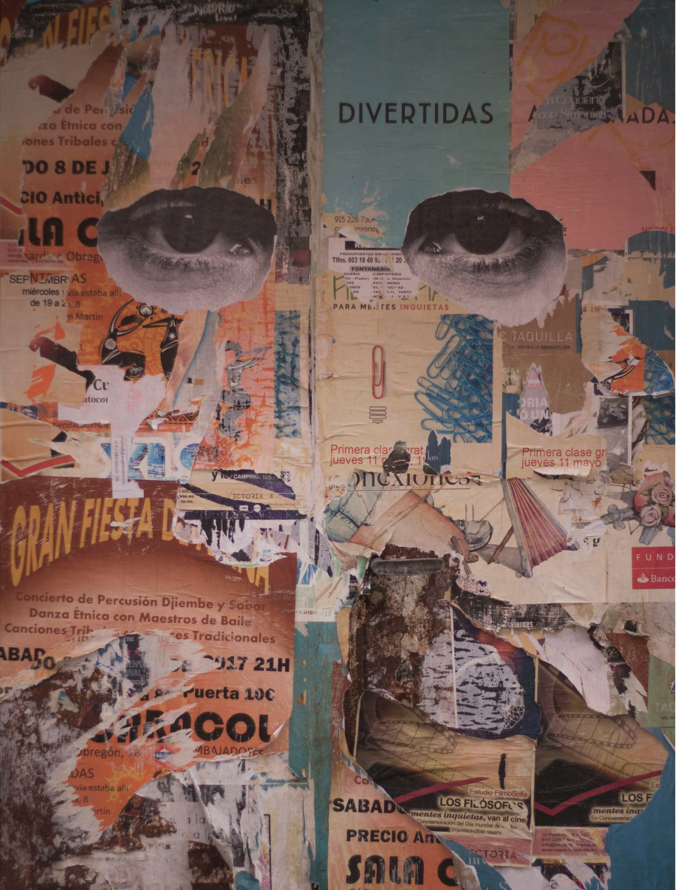
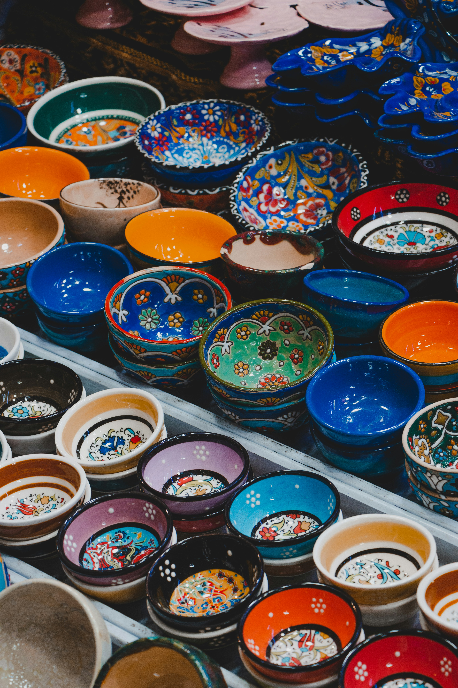

Drawing
Beautiful hand drawing using pencil shading techniques.

Photography
Professional photography capturing natural beauty.

Painting
Creative painting with modern artistic inspiration.

Digital Art
A section dedicated to digital artwork created using a computer, such as graphic design, animation, and interactive art.

Sculpture
It contains various models and sculptures, from traditional to modern sculpture, and reviews the materials and techniques used.

Collage
Collage art combines various elements and materials to create a unique work of art. Here you will find inspiring ideas and real examples.

Street Art
This section showcases art that is painted or sculpted in public spaces, with a focus on murals and expressive street art.

Handicrafts
This section features traditional and contemporary crafts, with handcrafting methods and creative projects to try out yourself.